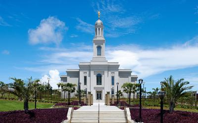
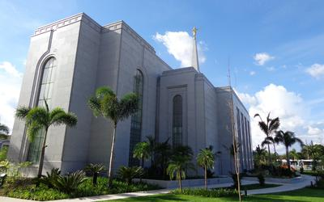
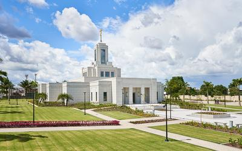
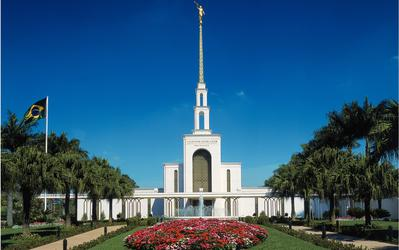
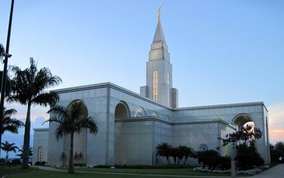
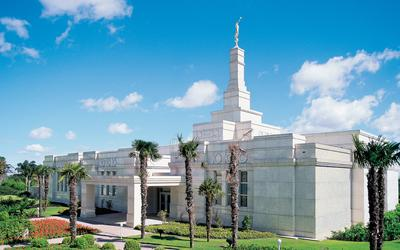
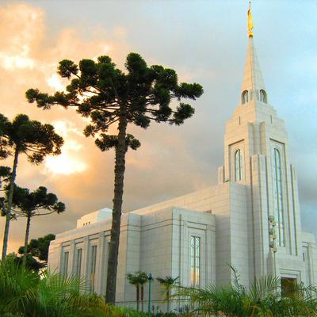

Temples Album
☰
Home
Old
New
Large
My Sacred Spaces Collection
Recife Temple

Fortaleza Temple

Manaus Temple

Belem Temple

São Paulo Brazil Temple
Rio de Janeiro Temple

Campinas Temple

Porto Alegre Temple

Curitiba Temple